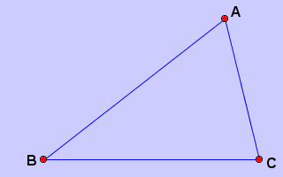
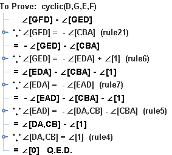

Nine Point Circle Theorem
The Nine Point Circle Theorem:
Let the midpoints of the sides AB, BC and CA of triangle ABC be E, F and G, and AD the altitude on BC. So that we hae D, E, F and G are on the same circle.
Start the program. If the program is already running, use  to start a new session.
to start a new session.
1. Draw a Triangle . Use the action  to draw an triangle( triangle ABC). See Action Triangle.
to draw an triangle( triangle ABC). See Action Triangle.

2. Three Midpoint . Use the action  to draw the three midpoints of the three sides( point D, E ,F). See Action Midpoint.
to draw the three midpoints of the three sides( point D, E ,F). See Action Midpoint.

3. The Foot . TUse the action  to create a foot. Select the point A and drag to line BC, so that the foot G is generated. See action Foot.
to create a foot. Select the point A and drag to line BC, so that the foot G is generated. See action Foot.

4. Adding the Conclusion. Use the menu "Prove -> To Prove" or use the button  to popup the conclusion dialog. Choose "Cyclic" on the popuped dialog and select four points on the diagram.
to popup the conclusion dialog. Choose "Cyclic" on the popuped dialog and select four points on the diagram.

Click Button OK. Now the conclusion is defined.
In this way, the left pane of JGEX shows the input for the prover.

Note that the last line shows the conclusion to be proved. Other lines are generated automatically by the JGEX when the user is drawing the diagram.
5. Select the prove method.

6. Prove the theorem.
This theorem can be proved with Wu's method, Groebner Basis Method, Deductive Database Method, and the Full Angle Method.
The proof of this theorem with the Full Angle Method is :

For more detail about the prove methods please refer to automated theorem prover.
JGEX Help